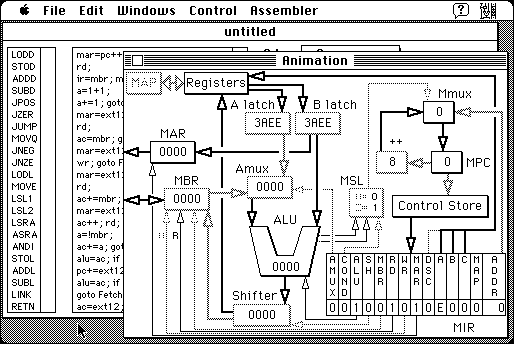

Download
msim11.zip (299K) MicroArchitecture Simulator 1.1 repackaged into a zipped hfs disk image and checksum file. The disk image can be mounted with Mini vMac.
msim11.bin (328K) MicroArchitecture Simulator 1.1 in the original format.
copyright: Fabrizio Oddone
mod date: Jun 13, 1997
license: freeware
official url :
MicroArchitecture Simulator
“Models a microprogrammed processor similar to the one described in the book ‘Structured Computer Organization’ by Andrew S. Tanenbaum.” Illustrates the execution of microcode as well as the conventional instructions. For “System 7.0 or later”. Source code is included.

If you find these downloads useful, please consider helping the Gryphel Project, which hosts them.
Here are the md5 checksums for the downloads, signed with Gryphel Key 5:
--------- GRY SIGNED TEXT --------- 571a587e8f130d739b036bac1547d6fc msim11.zip 2e9bb2892470bd063a16e47539bdda9b msim11.bin ------- BEGIN GRY SIGNATURE ------- Gry/4Xa8CFcUzxdN/L/0dFsLcBL+/YyhsjhpPQqRntTfRxbphaj7e8nSynx5BKWV ksUqisYWxc7LfYXSioEIQixbP8oqlxzMVjETKR0FQHs1p3FRZaGkmMEgxXNlMUKD +SJ08YEWfjOvS2nfTsw5kogBKDAHxFkpwPaEYS3ldQ0hQNSW0rHdJCukSfK96Rq2 -------- END GRY SIGNATURE --------